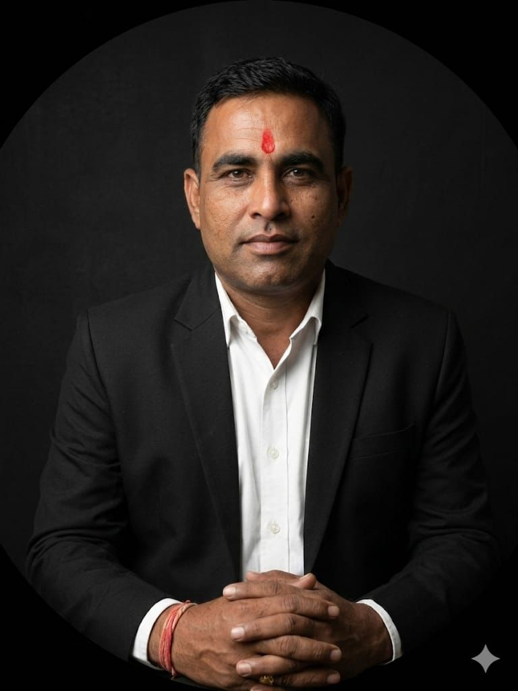
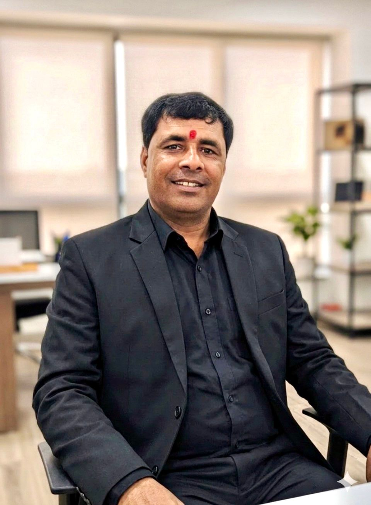

Founded with a vision to become a globally trusted supplier of refractory raw materials — built on quality, consistency, and trust.
We are manufacturers and suppliers of high quality chamotte used in refractory, ceramics and foundry industries. With a focus on consistent quality and particle size control, we serve customers in India and the Middle East.
Shiv Shakti Refractory is a quality-oriented refractory raw material plant with the honour of owning source mines through to gradation of raw materials. We have large mineral sources from owned lease mines and more than 10 washing plants with our own raw material transportation facilities.
We have supplied raw materials to well-known organisations for over 15 years, including Orient Refractories, Imerys India, and other leading industrial groups.
Mining material supplied to Orient Refractories, Imerys India, and other well-known groups across India and internationally.
An energetic duo who lead the team towards jet-speed growth — built on hard work, positive thinking, and an unrelenting innovative spirit.
The founders of Shiv Shakti Refractory believe firmly in hard work and positive thinking. They are an energetic duo who lead their team towards jet-speed growth. Their remarkable roadmap began from an unbelievable starting point — as a plant operator and shop representative — and gradually grew as they started taking Kaolin washing plants on rent, eventually moving toward ownership and partnership of more than 10 washing plants.
Their innovative nature did not stop there. They established a unique Kaolin washing plant — "Dwarkadish Minerals" — which stands as an innovative plant in the region and has received impressive feedback from all who have visited it.
After years of processing and maintaining Kaolin washing plants and supplying millions of tonnes of raw material to well-known organisations — without quality or quantity deviation — the dawn has now come for the refractory raw material world. Shiv Shakti Refractory has begun processing refractory raw materials to serve refractory manufacturers, driven by the vast and sustained deposition of high-alumina clay in the Kachchh region that promises a reliable supply for years to come.

From plant operator to owner of 10+ washing plants, Mr. Dangar brings unmatched hands-on expertise in mineral processing, mine operations, and industrial supply chain management — driving quality at every level of the organisation.

A visionary with deep experience in refractory raw material operations and client partnerships, Mr. Mata co-founded Dwarkadish Minerals and now leads Shiv Shakti Refractory's growth into the global refractory raw materials market.
To deliver consistent refractory raw materials to our customers without compromise on quality, ensuring reliable performance in every application.
To become a global supplier of calcined minerals and to set a milestone in refractory raw materials market — trusted by leading refractory manufacturers worldwide.
To supply committed refractory raw materials without quality deviation — consistency, transparency, and technical excellence in every batch we ship.
Started supplying chamotte and refractory raw materials to well-known organisations across India, including Orient Refractories and other leading groups.
Established 10+ washing plants with own transportation fleet and secured lease mines for end-to-end raw material control.
Extended footprint to UAE, Saudi Arabia, and European markets with proper international packing, documentation, and logistics.
Officially registered as Shiv Shakti Refractory, consolidating operations under one brand with ISO 9001 quality management.